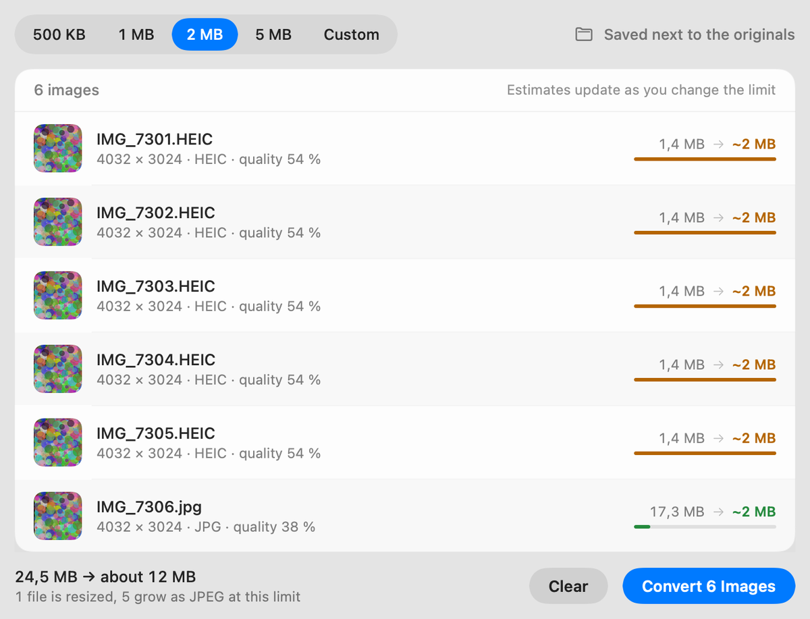

Your photo is 8 MB. The upload takes 2.
Select photos in Finder and press ⌃⌘J — they are converted where they sit, with no window and no waiting. Or right-click and pick the limit yourself. HEIC, PNG, JPEG, TIFF, WebP and camera raw all go in; a JPEG under your limit comes out, named for the size it actually reached.
brew install --cask mshykov/tap/image-shrink
macOS 13 or newer · Apple silicon and Intel · free and open source
The fast way, and the careful way
The hot key
Select images in Finder, press it, done — your last settings, no window, no app to open. Record any combination you like inside the app.
Right-click in Finder
Or take the slow road: Quick Actions → Convert to JPEG.
Pick the limit
500 KB, 1, 2 or 5 MB, or type your own. Every file shows what it will come out at before you convert.
It lands next to the original
IMG_7301.HEIC becomes IMG_7301-2MB.jpg in the same folder. The original stays where it is.

What it does that a web converter cannot
A hot key, not a workflow
Select files anywhere in Finder, press your combination, and they are converted in place with your last settings. Nothing opens, nothing to click.
Never bigger than the original
A 1.2 MB HEIC does not come out as a 2 MB JPEG just because the limit allows it.
Presets in the same menu
Email 2 MB, Web 1 MB, Messenger 500 KB — each one its own right-click entry.
Batches with real estimates
Change the limit and every row re-estimates in place, so you see the result before committing to it.
Your metadata, your call
Dates and EXIF are kept by default, or stripped — including GPS — with one switch.
Undo, and Shortcuts
One click puts a batch back. There is a Shortcuts action too, for the automations you already have.
Your images stay on your Mac
No uploads, no account, no analytics. Your photos are converted by macOS's own image encoder, on your machine, and nothing about them is sent anywhere.
The app makes exactly one kind of network request, and it has nothing to do with your images: it asks GitHub whether a newer version exists. It asks your permission first, on the second launch, and you can say no. The source is on GitHub if you would rather check than take my word for it, and the privacy page says exactly what is stored and what is sent.
Questions
Can I change the hot key?
Yes — click the keys in the window's banner, or Settings → Finder shortcut, and press the combination you want. ⌃⌘J is only the default. It works on a Finder selection without opening anything.
Does it touch my originals?
No. The converted copy is written next to the original, and the original is left alone unless you switch on "Move originals to Trash" yourself.
Where do the Finder entries come from?
The app installs them the first time you open it, and you can put them back or take them away from its menu at any time. Removing the app removes them with it.
How does it update?
It offers to check for new versions and installs them in place once you accept. Every
update is signed, and any update the app cannot verify against the key built into it is
refused. A copy installed with Homebrew updates the same way — the cask says so, and
brew upgrade leaves it alone.
What if a photo cannot reach the limit?
It scales the image down rather than turning it to mush, and tells you which files were resized. A file already under the limit is left as it is.
Intel Macs?
Yes — the download is a universal build, and works on macOS 13 and newer.